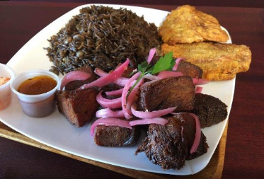

Haitin rice with beans and mushroom

Description
The rice with beans and mushroom and particular to the Haitians. This cooked not to differently than rice is being cooked elsewhere.
However the addition fot the beans and the mushroom transform the meal to something simply special. Try and tell and about your
experience.
You will need som sauce, seeafood, fried meat for enjoying your rice. To that, you can also add fried plantains, yams aor taros,
this is a matter of personnal choice.
Ingredients
- Rice
- Beans
- Mushroom (do not choose yourself, some species are not eatable as they are violent poison)
- Spices (Condiments))
- Salt (a littele bit, protect your health)
- Oil (a littele bit, protect your health)
Steps
- If you have chose dry beans, boil it separely and deeply (pressure cooker is the best choice in that case)
- Cook your riche as usual with a bit of oil, however the water used for that must be the one from the beans
and add the mushroom. Obviously, the beans are added as well
- Add condiments and a bit of salt
- Pepper can be added based on personal preference